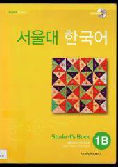

SNKoreys tilini boshlang'ich darajada o'rganuvchilar uchun mo'ljallangan amaliy darslik.
Ushbu kitob Seul Milliy Universiteti tomonidan koreys tilini boshlang'ich bosqichda o'rganayotgan kattalar uchun maxsus tuzilgan darslik hisoblanadi. Unda so'z boyligi, grammatika, tinglab tushunish, gapirish, o'qish va yozish ko'nikmalarini bosqichma-bosqich rivojlantirishga qaratilgan vazifalar o'rin olgan. Shuningdek, darslik koreys madaniyati va kundalik muloqot elementlarini o'z ichiga oladi.